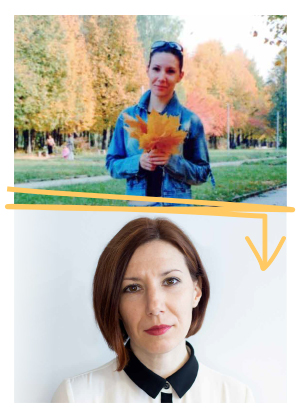

Вспомните, где вы были 15 лет назад.
И какой путь прошли к себе сегодняшнему.
И какой путь прошли к себе сегодняшнему.

Сколько раз вы принимали решения, которые изменили вашу историю? Сколько
раз вы думали, стоит ли сменить работу?
Стоит ли научиться чему-то новому? Стоит ли продолжать делать то, во что веришь, несмотря на все
трудности? Вся наша жизнь состоит из таких вопросов.
И именно ответы на них приводят нас туда, где мы сейчас.
Благотворительному Фонду Константина Хабенского исполняется 15 лет. За эти годы мы вместе преодолели множество препятствий. И несмотря ни на что меняли историю — наших подопечных, помощников, каждого, кто хотя бы один раз совершил пожертвование, чтобы помочь незнакомому человеку и, конечно, друг друга.
Мы знали, что нам стоит делать нашу работу.
Стоит жить здесь и сейчас, меняя истории людей.
Стоит помогать!
Благотворительному Фонду Константина Хабенского исполняется 15 лет. За эти годы мы вместе преодолели множество препятствий. И несмотря ни на что меняли историю — наших подопечных, помощников, каждого, кто хотя бы один раз совершил пожертвование, чтобы помочь незнакомому человеку и, конечно, друг друга.
Мы знали, что нам стоит делать нашу работу.
Стоит жить здесь и сейчас, меняя истории людей.
Стоит помогать!
За 15 лет работы Фонда команде удалось сформировать комплексный подход к решению вопросов диагностики, лечения и реабилитации в детской нейроонкологии - от оплаты обследований, курсов терапии и лекарств до закупки оборудования в профильные клиники и поддержки обучения медицинских специалистов.

Стоит продолжать каждую историю. Программа поддержки лечения «Адресная
помощь».
Цель программы — оказание адресной медицинской помощи детям и молодым взрослым, которая включает в себя оплату диагностики и лечения, приобретение лекарственных препаратов, расходных материалов и технических средств реабилитации, а также логистическую поддержку.
Цель программы — оказание адресной медицинской помощи детям и молодым взрослым, которая включает в себя оплату диагностики и лечения, приобретение лекарственных препаратов, расходных материалов и технических средств реабилитации, а также логистическую поддержку.
Стоит проливать свет на истории.
Информационно-просветительская программа «Знать и не бояться».
Программа направлена на развитие ранней диагностики опухолей головного и спинного мозга и повышение качества лечения и реабилитации пациентов данного профиля. Она включает в себя повышение квалификации медицинского персонала, информационно-просветительскую деятельность, а также информационную и методическую поддержку семей заболевших детей и молодых взрослых.
Программа направлена на развитие ранней диагностики опухолей головного и спинного мозга и повышение качества лечения и реабилитации пациентов данного профиля. Она включает в себя повышение квалификации медицинского персонала, информационно-просветительскую деятельность, а также информационную и методическую поддержку семей заболевших детей и молодых взрослых.
Стоит возвращать яркие краски в истории.
Программа реабилитации «Терапия счастья».
Программа решает задачи физической, социально-психологической и творческой реабилитации подопечных Фонда и членов их семей, позволяет качественно повысить эффективность проводимого лечения и помочь детям и молодым взрослым вернуться к полноценной жизни после долгого лечения
Программа решает задачи физической, социально-психологической и творческой реабилитации подопечных Фонда и членов их семей, позволяет качественно повысить эффективность проводимого лечения и помочь детям и молодым взрослым вернуться к полноценной жизни после долгого лечения
Стоит поддерживать тех, кто меняет истории.
Программа «Помощь медицинским и социальным учреждениям».
Программа нацелена на развитие инфраструктуры профильных отделений медицинских и социальных учреждений и повышение качества услуг, оказываемых детям и молодым взрослым с онкологическими и другими тяжелыми заболеваниями мозга.
Программа нацелена на развитие инфраструктуры профильных отделений медицинских и социальных учреждений и повышение качества услуг, оказываемых детям и молодым взрослым с онкологическими и другими тяжелыми заболеваниями мозга.
18 500
раз
подопечные Фонда получили
помощь в прохождении лечения
11 000
ребят
и членов их семей стали
участниками реабилитационных
проектов
179
поставок
оборудования и расходных
материалов осуществлено
9 000
врачей
стали участниками
просветительских проектов Фонда
За время своей работы Фонд обрел множество единомышленников, с чьей помощью преодолевал
препятствия и менял истории как подопечных и их близких, так и каждого, кто хоть раз
помогал и делал пожертвование.
Мы собрали короткие рассказы о жизни людей, связанных с Фондом, — какой путь они прошли к себе сегодняшнему, как начали участвовать в благотворительности и нашли в ней что-то свое.
Мы собрали короткие рассказы о жизни людей, связанных с Фондом, — какой путь они прошли к себе сегодняшнему, как начали участвовать в благотворительности и нашли в ней что-то свое.
Директор с 2013 до 2021 года (ушла из жизни в декабре 2021 года)
Мы попросили брата Алены — Владислава — рассказать нам о ее жизни 15 лет назад.
До Фонда Хабенского Алена довольно продолжительное время успешно занималась организацией больших проектов в сфере шоу-бизнеса. Работала на Первом канале, участвовала в организации Евровидения в Москве и Олимпийских игр в Сочи. Была сильно погружена в свою работу.
Помню тот момент, когда ее пригласили работать в Фонд Хабенского, как она спросила — какие у меня мысли по этому поводу. Для меня этот вопрос оказался неожиданностью, потому что тогда я не знал, что Алена связана с благотворительностью и участвует в мероприятиях как волонтер. Я сказал, что против, так как боюсь за ее эмоциональное состояние. Наша семья всю жизнь в медицине, и я хорошо себе представлял, с какими проблемами ей придется сталкиваться. Профиль Фонда — это сложные заболевания. Мне казалось, что Алена очень впечатлительный человек, и до этого она не была связана с медициной и ей будет тяжело. Но она захотела попробовать.
Видимо, тогда она почувствовала в этом необходимость. Поняла, что этим можно и нужно заниматься. Это было решением хорошего, доброго, нормального человека. У Алены была развитая эмпатия, она всегда активно участвовала в жизни своих друзей, в любой ситуации приходила на помощь. Несмотря на свой ненормированный график она каким-то образом всегда успевала поддерживать эти связи. Удивительный дар — дружить и заводить друзей, я думаю, она переняла у наших родителей.
Так случилось, что Алена оказалось в нужное время в нужном месте. Ей выпала возможность возглавить дело, в котором она реализовалась больше, чем на сто процентов. Никогда не слышал, что она устала от Фонда. У нее были большие планы, Фонд активно развивался. Здесь все ее способности — дар общаться и располагать к себе людей, умение собирать команду и строить систему — оказались в максимальном проявлении. Видимо, это то, для чего она была рождена.
Директор Фонда
15 лет назад я была почти такой же: те же близкие рядом — дети, муж, родители, братья и друзья. По образованию я юрист и экономист, если куда-то попадала, то в первую очередь наводила порядок: выявляла правовые риски, выруливала сложности, выстраивала учет, финансовое планирование и результативность. Я хорошо понимаю что такое быть предпринимателем — это очень деятельная, созидательная жизнь с определенными рисками и с большими мечтами. Я мечтала, чтобы мое дело было социально ориентированным со всех ракурсов — чтобы бизнес имел долю в прибыли на благотворительность, а мои покупатели были нее вовлечены, чтобы производство было экологичным, а команда работников — инклюзивной.
В 2013 году я познакомилась с Фондом, и Алена Мешкова предложила занять позицию исполнительного директора в Фонде Хабенского. Быть неким административным тылом. Я приняла ее предложение и отложила идею развития своего бизнеса, решила быть полезной в том, что хорошо знаю и в чем точно непоколебима. Работа с Аленой в Фонде — большая и очень ценная для меня глава в жизни — вместе с коллегами мы выстроили работу Фонда таким, каким вы его знаете на сегодня. Когда в 2021 году мы потеряли Алену, я заняла должность директора Фонда.
Руководитель программы «Адресная помощь»

В 2008 году я, проработав после окончания института 3 месяца по контракту,
перешла
в фирму к знакомым. Это был агрохолдинг, в котором я совмещала работу секретаря
коммерческой и общественной организаций, входящих в него, с перспективой перехода
на должность по юридической специальности. Однако, поработать по специализации мне
пришлось уже в другом месте — юридической компании, спустя некоторое время.
Мне всегда хотелось делать что-то полезное, быть нужной. И перед самым приходом в Фонд, меня начала интересовать тема волонтёрства, я стала узнавать информацию про благотворительные фонды, специфику их деятельности. А потом знакомые случайно рассказали, что Фонд Хабенского перезапускает свою деятельность и они ищут администратора. Я, не сомневаясь ни секунды, записалась на собеседование.
Когда я пришла в Фонд в 2013 году, нас было 6 человек. И это была ещё совсем другая организация. У нас были фундамент и направление и мы начали системно выстраивать дальнейшую работу: разрабатывали, сайт, настраивали платежные системы, формировали волонтёрское сообщество. Было непросто и временами непонятно, но всегда невероятно интересно.
Спустя год моей работы Алёна Мешкова предложила мне занять должность координатора программы «Адресная помощь» и забрать к себе под опеку всех наших подопечных, которым требовалась помощь по данному направлению. Мне кажется, Алёна всегда абсолютно точно видела, на каком месте должен быть тот или иной пазл. Думаю, я стала одним из таких пазлов в «Адресной помощи» — вот уже 10 лет я совершенно не представляю свою жизнь без таких разных историй наших подопечных и их родителей. С самых первых дней я не воспринимала Фонд как работу — попав в эту атмосферу, ты настолько ей пропитываешься, что безвозвратно преобразуешь это в свой образ жизни.
Мне всегда хотелось делать что-то полезное, быть нужной. И перед самым приходом в Фонд, меня начала интересовать тема волонтёрства, я стала узнавать информацию про благотворительные фонды, специфику их деятельности. А потом знакомые случайно рассказали, что Фонд Хабенского перезапускает свою деятельность и они ищут администратора. Я, не сомневаясь ни секунды, записалась на собеседование.
Когда я пришла в Фонд в 2013 году, нас было 6 человек. И это была ещё совсем другая организация. У нас были фундамент и направление и мы начали системно выстраивать дальнейшую работу: разрабатывали, сайт, настраивали платежные системы, формировали волонтёрское сообщество. Было непросто и временами непонятно, но всегда невероятно интересно.
Спустя год моей работы Алёна Мешкова предложила мне занять должность координатора программы «Адресная помощь» и забрать к себе под опеку всех наших подопечных, которым требовалась помощь по данному направлению. Мне кажется, Алёна всегда абсолютно точно видела, на каком месте должен быть тот или иной пазл. Думаю, я стала одним из таких пазлов в «Адресной помощи» — вот уже 10 лет я совершенно не представляю свою жизнь без таких разных историй наших подопечных и их родителей. С самых первых дней я не воспринимала Фонд как работу — попав в эту атмосферу, ты настолько ей пропитываешься, что безвозвратно преобразуешь это в свой образ жизни.
Детский онколог, член экспертного совета и волонтер Фонда
15 лет назад я работала в Национальном медицинском исследовательском центре детской гематологии, онкологии и иммунологии имени Дмитрия Рогачева, руководила отделом нейроонкологии. Там под руководством Александра Григорьевича Румянцева мы стали серьезно заниматься вопросами комплексного лечения опухолей центральной нервной системы. По сути, тогда мы начинали практически с нуля, потому что лечение таких пациентов было во многом провальным. Еще не было понимания, что в каждом случае нужен дифференцированный и персонализированный подход с минимальными токсическими проявлениями.
Сегодня благодаря новым технологиям, современным методам обследования и лечения детская нейроонкология становится очень прогрессивной и перспективной областью. По данным Научно-практического центра специализированной медицинской помощи детям имени В.Ф. Войно-Ясенецкого, где я сейчас работаю, выживаемость пациентов, например, с медуллобластомой уже выше 80 процентов. Все эти результаты стали возможны в том числе и благодаря благотворительным фондам, с которыми мы сотрудничаем на регулярной основе.
С Фондом Хабенского я и моя команда врачей начали тесно взаимодействовать с момента его основания. Как я всегда говорю, Фонд — это наша «скорая помощь». Для пациентов нашего профиля любая отсрочка в обследовании или лечении очень значима, и Фонд помогает нам быстро решить вопросы, связанные с диагностическими исследованиями, с обеспечением пациентов препаратами, лечением или с восстановительной терапией. Фонд страхует нас в случаях, еще не решенных на государственном уровне.
Также благодаря Фонду активно повышается квалификация врачей в нашей области. Организовываются семинары в разных регионах России, в рамках которых проводятся не только лекционные, но и практические занятия. На месте мы консультируем пациентов с опухолями ЦНС и обсуждаем с врачами их лечебную тактику.
В нейроонкологии я работаю более 20 лет, для меня важно делиться опытом с коллегами. Я всегда говорю, что цель нашей с Фондом работы — научить всю страну лечить пациентов с опухолями ЦНС по самым современным программам.

Волонтер Фонда
15 лет назад я жила в городе Волжском, училась заочно на бухгалтера
и работала
диспетчером на Хлебозаводе — принимала заявки на отгрузку и доставку
хлеба.
Бухгалтерия не была моей мечтой, но была на тот момент залогом стабильности. Все изменилось в 2009 году, когда моя семья столкнулась с тяжелой личной историей. Я стала задумываться о том, что в моей жизни что-то идет не так, стало скучно и неинтересно. И в какой-то момент я уехала в Москву воплощать свою мечту — организовывать мероприятия.
После была работа на радио и знакомство с Фондом Хабенского. Наша компания поддерживала один из проектов Фонда — благотворительный спектакль «Поколение Маугли», где я впервые оказалась в роли волонтера.
Тогда у меня было много энергии и сильное желание как-то разнообразить свою жизнь. К тому же мне всегда нравилось что-то дарить другим людям, оставлять за собой какую-то историю из хороших дел. Благодаря появлению Фонда в моей жизни все это стало возможным.
Моя жизнь не изменилась кардинально, скорее она просто стала ярче. Волонтерство помогло мне лучше узнать себя, найти новых друзей и еще больше раскрыть свои организаторские и коммуникативные способности — сделать людей пусть немного, но счастливее.
Бухгалтерия не была моей мечтой, но была на тот момент залогом стабильности. Все изменилось в 2009 году, когда моя семья столкнулась с тяжелой личной историей. Я стала задумываться о том, что в моей жизни что-то идет не так, стало скучно и неинтересно. И в какой-то момент я уехала в Москву воплощать свою мечту — организовывать мероприятия.
После была работа на радио и знакомство с Фондом Хабенского. Наша компания поддерживала один из проектов Фонда — благотворительный спектакль «Поколение Маугли», где я впервые оказалась в роли волонтера.
Тогда у меня было много энергии и сильное желание как-то разнообразить свою жизнь. К тому же мне всегда нравилось что-то дарить другим людям, оставлять за собой какую-то историю из хороших дел. Благодаря появлению Фонда в моей жизни все это стало возможным.
Моя жизнь не изменилась кардинально, скорее она просто стала ярче. Волонтерство помогло мне лучше узнать себя, найти новых друзей и еще больше раскрыть свои организаторские и коммуникативные способности — сделать людей пусть немного, но счастливее.
Руководитель направления финансовой отчетности
В 2008 году я планировала выходить из второго декрета на свою прежнюю работу
в аудиторской компании. Тогда у меня не было запроса на кардинальные перемены,
но спустя несколько лет я стала задумываться — какой смысл в моей работе,
зачем я все это делаю. Я понимала, что дети подросли, а у меня очень много сил,
энергии, и я могу быть полезна другим людям. Очень хотелось найти новую отрасль, где
я могла бы применить себя максимально эффективно.
Спустя какое-то время случилось так, что я попала в фонд помощи хосписам «Вера». Подавала резюме на должность помощника руководителя, но к тому моменту человека на это место уже нашли и мне предложили попробовать себя в качестве координатора в Центре паллиативной помощи. Я плохо представляла себе, что такое благотворительность, и побоялась устраиваться на эту должность, но осталась в роли волонтера. Занималась хозяйственными и организационными историями. Тогда же я поняла, какую огромную роль играет общение с подопечными. Для меня это ничего не стоит, а для них — глоток свежего воздуха.
Спустя время я почувствовала, что хочу работать в благотворительности. Я нужна здесь, мне это интересно. Волею судеб моя мечта сбылась, и я оказалась в Фонде Хабенского.
Спустя какое-то время случилось так, что я попала в фонд помощи хосписам «Вера». Подавала резюме на должность помощника руководителя, но к тому моменту человека на это место уже нашли и мне предложили попробовать себя в качестве координатора в Центре паллиативной помощи. Я плохо представляла себе, что такое благотворительность, и побоялась устраиваться на эту должность, но осталась в роли волонтера. Занималась хозяйственными и организационными историями. Тогда же я поняла, какую огромную роль играет общение с подопечными. Для меня это ничего не стоит, а для них — глоток свежего воздуха.
Спустя время я почувствовала, что хочу работать в благотворительности. Я нужна здесь, мне это интересно. Волею судеб моя мечта сбылась, и я оказалась в Фонде Хабенского.
Актер, режиссер, друг и волонтер Фонда
В 2008 году я жил в Перми. Только окончил институт по специальности
«режиссер театрализованных представлений» и работал, где и кем
придется — от клоуна до аниматора.
Потом на два года пропал в клубной жизни, работал 24/7. Сначала в роли помощника, а затем в качестве арт-директора самого модного ночного клуба Перми. Организовывал концерты и вечеринки. В 2010 начала закручиваться актерская карьера. Съёмки, постоянные перелеты, новые роли, города, популярность.
Однако ещё со времён института я знал, что хочу снимать свое кино. И в 2018 году пошел на Высшие курсы сценаристов и режиссеров в мастерскую Павла Семёновича Лунгина.
Сегодня я являюсь генеральным продюсером и директором кинокомпании и кинорежиссером, у которого в запасе уже три художественных фильма.
Благотворительность пришла в мою жизнь в 2013 году — очень неожиданно и, видимо, вовремя. Это была смешная история: тогда мы с семьёй ещё жили в Перми. Я купил сыну электромобиль. Была зима. Мы пошли в местный ДК Молодёжи, чтобы там он смог поездить по мраморному полу. И в этот момент ко мне подошла Ольга Викторовна Зубкова, глава фонда «Вектор дружбы» и инклюзивного лагеря «Новый город «Дружный» в Перми, и предложила почитать стихи их подопечным и провести мастер-класс. Так началась моя большая дружба с этим проектом и благотворительностью в целом.
О Фонде Хабенского я много слышал ещё до момента знакомства, но стал другом и волонтером только после фильма «Огонь», в котором мы вместе снимались с Константином Юрьевичем в 2019 году. Он много рассказывал о работе Фонда, и я, естественно, заинтересовался. Спустя время Константин Юрьевич впервые пригласил меня на традиционную благотворительную историю Фонда — футбол на Патриках. С тех пор я — волонтер Фонда. Это большая и важная часть моей жизни.
Потом на два года пропал в клубной жизни, работал 24/7. Сначала в роли помощника, а затем в качестве арт-директора самого модного ночного клуба Перми. Организовывал концерты и вечеринки. В 2010 начала закручиваться актерская карьера. Съёмки, постоянные перелеты, новые роли, города, популярность.
Однако ещё со времён института я знал, что хочу снимать свое кино. И в 2018 году пошел на Высшие курсы сценаристов и режиссеров в мастерскую Павла Семёновича Лунгина.
Сегодня я являюсь генеральным продюсером и директором кинокомпании и кинорежиссером, у которого в запасе уже три художественных фильма.
Благотворительность пришла в мою жизнь в 2013 году — очень неожиданно и, видимо, вовремя. Это была смешная история: тогда мы с семьёй ещё жили в Перми. Я купил сыну электромобиль. Была зима. Мы пошли в местный ДК Молодёжи, чтобы там он смог поездить по мраморному полу. И в этот момент ко мне подошла Ольга Викторовна Зубкова, глава фонда «Вектор дружбы» и инклюзивного лагеря «Новый город «Дружный» в Перми, и предложила почитать стихи их подопечным и провести мастер-класс. Так началась моя большая дружба с этим проектом и благотворительностью в целом.
О Фонде Хабенского я много слышал ещё до момента знакомства, но стал другом и волонтером только после фильма «Огонь», в котором мы вместе снимались с Константином Юрьевичем в 2019 году. Он много рассказывал о работе Фонда, и я, естественно, заинтересовался. Спустя время Константин Юрьевич впервые пригласил меня на традиционную благотворительную историю Фонда — футбол на Патриках. С тех пор я — волонтер Фонда. Это большая и важная часть моей жизни.
Руководитель программы «Терапия счастья»
В 2008 году я работала исполнительным директором в консалтинговой компании.
Занималась
различными проектами, которые были связаны с оценкой стоимости бренда. В тот момент
я не думала ни про благотворительность, ни про истории с помощью.
Однако за несколько лет до этого я столкнулась с темой онкологии в личной истории. У сына моей подруги обнаружили опухоль мозга. Около года мы все вместе его лечили, но, к нашему огромному сожалению, мальчика спасти не удалось. Тем не менее в тот момент я поняла, что мы сделали много. Как для ребенка, так и для его семьи. Мы не оставили родителей одних. Пережитый опыт сплотил нас.
В 2011 году я попала в корпоративную благотворительность. Работала исполнительным директором благотворительного фонда в сети магазинов детских товаров. Мы помогали социальным учреждениям, в том числе и фондам, делали оформления детских пространств. Среди них были детские комнаты в одной из клиник , где сейчас проходят лечение и подопечные Фонда Хабенского.
И после я пришла в наш Фонд. Мне всегда нравилось хорошо и интересно работать, но только здесь, возможно впервые в жизни, я получаю такое удовольствие. Я рада, что в благотворительности мне удалось применить мои навыки и интересы: педагогическое образование — в разработке выездных программ реабилитации, жизненный опыт с личными историями и разными местами работы — в общении с детьми, взрослыми, партнерами и коллегами.
Однако за несколько лет до этого я столкнулась с темой онкологии в личной истории. У сына моей подруги обнаружили опухоль мозга. Около года мы все вместе его лечили, но, к нашему огромному сожалению, мальчика спасти не удалось. Тем не менее в тот момент я поняла, что мы сделали много. Как для ребенка, так и для его семьи. Мы не оставили родителей одних. Пережитый опыт сплотил нас.
В 2011 году я попала в корпоративную благотворительность. Работала исполнительным директором благотворительного фонда в сети магазинов детских товаров. Мы помогали социальным учреждениям, в том числе и фондам, делали оформления детских пространств. Среди них были детские комнаты в одной из клиник , где сейчас проходят лечение и подопечные Фонда Хабенского.
И после я пришла в наш Фонд. Мне всегда нравилось хорошо и интересно работать, но только здесь, возможно впервые в жизни, я получаю такое удовольствие. Я рада, что в благотворительности мне удалось применить мои навыки и интересы: педагогическое образование — в разработке выездных программ реабилитации, жизненный опыт с личными историями и разными местами работы — в общении с детьми, взрослыми, партнерами и коллегами.
Руководитель программы «Помощь медицинским и социальным учреждениям»
В 2008 году я прощалась со школьной жизнью, мучилась вопросами самоопределения
и поступала в университет на направление связей с общественностью.
А еще — не поехала в любимый лагерь вожатить, потому что нужно было
дождаться
результатов вступительных экзаменов.
Тогда уже года два или три я была волонтером — состояла в организации, которая в том числе имела волонтерские социальные программы. Мы регулярно выезжали с концертами и разными активностями в дом-интернат для мальчиков с особенностями развития. Волонтерили в больнице, где, кстати, проходят лечение подопечные нашего Фонда.
Курсе на 4-ом я поняла, что хочу работать в некоммерческом секторе, в благотворительном фонде. У меня даже была идея, что в будущем я создам свой фонд. А на 5-ом курсе уже начала прицельно искать работу, что было достаточно сложно. Тогда фонды, в основном, нуждались в фандрайзерах, и у меня не было понимания, как я могу быть полезна в благотворительности со своими навыками.
Спустя время я начала работать в фонде «Галчонок», а потом пришла в Фонд Хабенского. Сначала волонтером, а затем — руководителем одной из программ.
Мне нравится помогать людям и улучшать качество их жизни. Плюс, благотворительность — это новая развивающаяся структура, где ты сам создаешь правила и формируешь принципы работы. В этой свободе, в этих возможностях, в этих вызовах я нашла себя.
Тогда уже года два или три я была волонтером — состояла в организации, которая в том числе имела волонтерские социальные программы. Мы регулярно выезжали с концертами и разными активностями в дом-интернат для мальчиков с особенностями развития. Волонтерили в больнице, где, кстати, проходят лечение подопечные нашего Фонда.
Курсе на 4-ом я поняла, что хочу работать в некоммерческом секторе, в благотворительном фонде. У меня даже была идея, что в будущем я создам свой фонд. А на 5-ом курсе уже начала прицельно искать работу, что было достаточно сложно. Тогда фонды, в основном, нуждались в фандрайзерах, и у меня не было понимания, как я могу быть полезна в благотворительности со своими навыками.
Спустя время я начала работать в фонде «Галчонок», а потом пришла в Фонд Хабенского. Сначала волонтером, а затем — руководителем одной из программ.
Мне нравится помогать людям и улучшать качество их жизни. Плюс, благотворительность — это новая развивающаяся структура, где ты сам создаешь правила и формируешь принципы работы. В этой свободе, в этих возможностях, в этих вызовах я нашла себя.
Управляющий директор
15 лет назад моя работа была очень далека от мира благотворительности —
в 2008 я работала руководителем проектов в международной телекоммуникационной
компании.
Затем на 4 года случился большой проект по организации работы главного пресс-центра
на Олимпийских играх, после которого я всерьез задумалась, чем буду заниматься дальше.
Хотелось чего-то не просто не менее интересного, но и с каким-то
дополнительным
смыслом.
В 2016 году Алена Мешкова, с которой мы были знакомы по Олимпиаде, рассказала про Фонд, и я подумала — здесь классная социальная миссия и очень много возможностей попробовать применить то, что работает в других сферах, должно быть интересно. Меня особенно вдохновило как Алена выстраивала системную работу в Фонде и как одновременно с этим просто, легко и доступно она говорила о благотворительности.
И сегодня мне очень созвучно и по-прежнему вдохновляет то, как люди из очень разных сфер объединяются, чтобы сделать что-то важное, не руководствуясь только формальными обязанностями и ежедневными рабочими задачами. Вовлечение каждого из нас в работу Фонда создает общий дух — и с командой, и со всеми теми, кто ежедневно поддерживает наше общее дело.
В 2016 году Алена Мешкова, с которой мы были знакомы по Олимпиаде, рассказала про Фонд, и я подумала — здесь классная социальная миссия и очень много возможностей попробовать применить то, что работает в других сферах, должно быть интересно. Меня особенно вдохновило как Алена выстраивала системную работу в Фонде и как одновременно с этим просто, легко и доступно она говорила о благотворительности.
И сегодня мне очень созвучно и по-прежнему вдохновляет то, как люди из очень разных сфер объединяются, чтобы сделать что-то важное, не руководствуясь только формальными обязанностями и ежедневными рабочими задачами. Вовлечение каждого из нас в работу Фонда создает общий дух — и с командой, и со всеми теми, кто ежедневно поддерживает наше общее дело.

Руководитель направления по работе с юридическими лицами
В 2008 году я училась на 4 курсе института. Внутри были легкость и свобода,
а впереди — огромный мир, открытия, яркие эмоции, встречи с людьми
и поворотные события.
Тогда я ничего не знала о благотворительности и вряд ли бы поверила, что ко мне когда-либо придут мысли о реализации в этой сфере. Единственный образ из тех времен — Одри Хепберн, которая была послом доброй воли ЮНИСЕФ. Помню, как меня восхищала ее деятельность — помощь сотням детей в разных точках нашей планеты. Моей же «доброты» тогда хватало только на то, чтобы подкармливать бездомных животных.
А еще я мечтала о собаке, своей первой настоящей собаке. Помню, как с самыми серьезными намерениями я пришла на свои первые «взрослые» переговоры к родителям с непоколебимым желанием завести собаку. Переговоры закончились успехом, но с одним условием, что я покупаю ее сама. Вот тогда и случилась первая настоящая работа и появилась долгожданная собака — маленький йоркширский терьер Микки, которого не стало, когда я уже активно работала в Фонде.
И пусть моя любовь к благотворительности и социальным изменениям случилась намного позже, из таких вот пазлов прошлого выстроилось мое настоящее. Оглядываясь назад, я точно понимаю, что все решения и все события того стоили.
Тогда я ничего не знала о благотворительности и вряд ли бы поверила, что ко мне когда-либо придут мысли о реализации в этой сфере. Единственный образ из тех времен — Одри Хепберн, которая была послом доброй воли ЮНИСЕФ. Помню, как меня восхищала ее деятельность — помощь сотням детей в разных точках нашей планеты. Моей же «доброты» тогда хватало только на то, чтобы подкармливать бездомных животных.
А еще я мечтала о собаке, своей первой настоящей собаке. Помню, как с самыми серьезными намерениями я пришла на свои первые «взрослые» переговоры к родителям с непоколебимым желанием завести собаку. Переговоры закончились успехом, но с одним условием, что я покупаю ее сама. Вот тогда и случилась первая настоящая работа и появилась долгожданная собака — маленький йоркширский терьер Микки, которого не стало, когда я уже активно работала в Фонде.
И пусть моя любовь к благотворительности и социальным изменениям случилась намного позже, из таких вот пазлов прошлого выстроилось мое настоящее. Оглядываясь назад, я точно понимаю, что все решения и все события того стоили.
Аналитик направления онлайн сервисов
Всю сознательную жизнь я учился, работал и занимался спортом. После окончания юридического
института ушел во внешнеэкономическую деятельность — в международные перевозки
и таможенное оформление.
В 2008 году продолжал работать в той же отрасли, занимался аналитикой. Трудно сказать, почему я пришел в благотворительность после двадцати с лишним лет работы в международных перевозках. В 2021 году я прицельно не искал работу, но когда поступило предложение от Фонда Хабенского, я особо не думал и согласился. Понял, что я много чего уже знаю и умею и могу внести что-то свое в работу Фонда.
Подспудно свою роль сыграла и моя личная история — от онкологии у меня умер отец. И я могу представить, что чувствуют люди, родители подопечных, столкнувшись с таким диагнозом. Если можешь в такой ситуации хоть чем-то помочь, то это обязательно нужно делать.
О своем решении я ни разу не пожалел. Здесь ты видишь, что команда, программные и финансовые направления Фонда, работают как единое целое. Здесь все заинтересованы в результате.
Моя работа связана с цифрами, и я вижу, как приходят пожертвования, и на какие цели и задачи они расходуются. Для меня это очень важно. Ставить перед собой цель, идти к ней и видеть результат работы всей команды — это огромная мотивация.
В 2008 году продолжал работать в той же отрасли, занимался аналитикой. Трудно сказать, почему я пришел в благотворительность после двадцати с лишним лет работы в международных перевозках. В 2021 году я прицельно не искал работу, но когда поступило предложение от Фонда Хабенского, я особо не думал и согласился. Понял, что я много чего уже знаю и умею и могу внести что-то свое в работу Фонда.
Подспудно свою роль сыграла и моя личная история — от онкологии у меня умер отец. И я могу представить, что чувствуют люди, родители подопечных, столкнувшись с таким диагнозом. Если можешь в такой ситуации хоть чем-то помочь, то это обязательно нужно делать.
О своем решении я ни разу не пожалел. Здесь ты видишь, что команда, программные и финансовые направления Фонда, работают как единое целое. Здесь все заинтересованы в результате.
Моя работа связана с цифрами, и я вижу, как приходят пожертвования, и на какие цели и задачи они расходуются. Для меня это очень важно. Ставить перед собой цель, идти к ней и видеть результат работы всей команды — это огромная мотивация.
Друг и волонтер Фонда
Вся моя профессиональная и социальная жизнь так или иначе связана с помощью людям. Еще
в школе в качестве начальной профессиональной подготовки я выбрала для себя
специальность
младшей медсестры, а позже — поступила в медицинский институт. В 2008 году
была врачом-стоматологом. Потом переквалифицировалась и работала сначала в международной
фармкомпании, а затем воплощала концепцию отеля в рамках семейного бизнеса
в Сочи.
15 лет назад я не думала о взаимодействии с благотворительными фондами, но мне всегда хотелось помогать и по мере своих сил делать для людей больше. Поддерживать их в сложные жизненные периоды. Но в тот момент я просто не знала как.
А в 2019 году в близком окружении оказались друзья Фонда Хабенского. У меня было свободное время и силы, и я решила попробовать реализовать свое желание в рамках Фонда.
Сначала я помогла сотрудникам в офисе, а потом — предложила в качестве безвозмездной площадки для выездных реабилитационных программ наш семейный отель в Сочи.
Сейчас Фонд — это уже часть моей жизни. Постоянно думаю, какие новые формы взаимодействия или помощи еще могут быть, ищу партнеров.
На наших выездных реабилитационных программах я поняла, что для меня огромную роль играет именно личное участие. Не просто финансовая или административная помощь. Видеть своими глазами результат, как ребята и их родители меняются за такой короткий срок, — это очень вдохновляет и мотивирует помогать все больше и больше.
15 лет назад я не думала о взаимодействии с благотворительными фондами, но мне всегда хотелось помогать и по мере своих сил делать для людей больше. Поддерживать их в сложные жизненные периоды. Но в тот момент я просто не знала как.
А в 2019 году в близком окружении оказались друзья Фонда Хабенского. У меня было свободное время и силы, и я решила попробовать реализовать свое желание в рамках Фонда.
Сначала я помогла сотрудникам в офисе, а потом — предложила в качестве безвозмездной площадки для выездных реабилитационных программ наш семейный отель в Сочи.
Сейчас Фонд — это уже часть моей жизни. Постоянно думаю, какие новые формы взаимодействия или помощи еще могут быть, ищу партнеров.
На наших выездных реабилитационных программах я поняла, что для меня огромную роль играет именно личное участие. Не просто финансовая или административная помощь. Видеть своими глазами результат, как ребята и их родители меняются за такой короткий срок, — это очень вдохновляет и мотивирует помогать все больше и больше.

Руководитель программы «Знать и не бояться»
В 2008 году я жила в Челябинске. Училась в университете сразу на двух
специальностях — телевизионная радиожурналистика и переводчик в сфере
профессиональной коммуникации. Мечтала стать журналистом и фактически «пропадала»
на телевидении.
Мне всегда хотелось каким-то образом влиять на жизнь других людей и менять мир в лучшую сторону. Тогда у меня не было мысли идти именно в благотворительность, хотя в детстве я и мечтала построить приют для кошек и собак и найти лекарство от рака. Но будучи студенткой, я считала, что именно журналистика позволит мне реализовывать позитивные социальные изменения.
После окончания университета я ушла в пиар и рекламу. Еще позже, поработав на Олимпиаде в Сочи, решила заняться более масштабными проектами и так переехала в Москву. Здесь работала в сфере рекламы и маркетинга, видела результат своей работы. Но со временем захотелось стать причастной к большому и действительно важному делу — работать в компании с социальной миссией.
Так, в 2016 году я пришла в Фонд Хабенского. Поначалу мне было эмоционально сложно погружаться в тему, но познакомившись с врачами и с командой экспертов, я влюбилась в медицину. Нейроонкология находится на стыке искусства и точных наук, и это в точности совпадает с моим складом ума и характером. Фонд для меня уже давно не место работы, а дело жизни.
Мне всегда хотелось каким-то образом влиять на жизнь других людей и менять мир в лучшую сторону. Тогда у меня не было мысли идти именно в благотворительность, хотя в детстве я и мечтала построить приют для кошек и собак и найти лекарство от рака. Но будучи студенткой, я считала, что именно журналистика позволит мне реализовывать позитивные социальные изменения.
После окончания университета я ушла в пиар и рекламу. Еще позже, поработав на Олимпиаде в Сочи, решила заняться более масштабными проектами и так переехала в Москву. Здесь работала в сфере рекламы и маркетинга, видела результат своей работы. Но со временем захотелось стать причастной к большому и действительно важному делу — работать в компании с социальной миссией.
Так, в 2016 году я пришла в Фонд Хабенского. Поначалу мне было эмоционально сложно погружаться в тему, но познакомившись с врачами и с командой экспертов, я влюбилась в медицину. Нейроонкология находится на стыке искусства и точных наук, и это в точности совпадает с моим складом ума и характером. Фонд для меня уже давно не место работы, а дело жизни.
Директор по коммуникациям
В 2008 году я училась в университете на журналиста и работала диджеем
на радио в своем родном городе Владимире. Я жила свою обычную студенческую жизнь
и не планировала ничего в ней менять. После учебы я уже примерно знала, где могу
работать. Но однажды, я поняла, что мне хочется попробовать свои силы за пределами
Владимира и поехала в Москву.
Достаточно быстро я нашла работу в пиар-агентстве, где с нуля опытным путем освоила профессию пиарщика и занималась продвижением мюзиклов, концертов и артистов, потом был период на радио и в Политехе. Моя работа задавала тон и ритм моей жизни — я погружалась в нее с головой, путешествовала, ходила на выставки, в театры, общалась с интересными людьми и благодаря этому очень сильно выросла. В какой-то момент я поняла, что могу использовать свой опыт и навыки в деле, где помогают людям. Так я и оказалась в Фонде Хабенского. Я рада, что однажды я рискнула и кардинально изменила свою жизнь. И могу сказать каждому — стоит прислушиваться к себе и своему внутреннему голосу.
Достаточно быстро я нашла работу в пиар-агентстве, где с нуля опытным путем освоила профессию пиарщика и занималась продвижением мюзиклов, концертов и артистов, потом был период на радио и в Политехе. Моя работа задавала тон и ритм моей жизни — я погружалась в нее с головой, путешествовала, ходила на выставки, в театры, общалась с интересными людьми и благодаря этому очень сильно выросла. В какой-то момент я поняла, что могу использовать свой опыт и навыки в деле, где помогают людям. Так я и оказалась в Фонде Хабенского. Я рада, что однажды я рискнула и кардинально изменила свою жизнь. И могу сказать каждому — стоит прислушиваться к себе и своему внутреннему голосу.
Наши подопечные – ребята с опухолями мозга – написали, о каких профессиях, личных победах и
достижениях они мечтают в будущем. Их письма зачитали актеры Роза Хайруллина, Денис
Власенко и Никита Волков, комик Богдан Лисевский, музыканты Антон Севидов, Тося Чайкина,
Тима ищет свет и Mary Gu.
Арина, 9 лет
Когда я вырасту, мне бы хотелось стать художником или художником- мультипликатором. Если бы я стала художником, я бы рисовала картины с изображением природы, например, зелёные луга и леса, жуков, бабочек, птиц. Мне кажется, что такие картины очень добрые, и они запоминаются на всю жизнь. А иногда мне кажется, что интересно быть художником- мультипликатором. Я бы придумывала персонажей для своих мультфильмов, рисовала и раскрашивала их. Конечно, нужно в этой работе хорошо рисовать и иметь хорошее воображение. Я считаю, у меня оно есть. Самая моя заветная мечта, когда я выросту, иметь свою студию с моими картинами, а люди приходили и смотрели бы их. Я очень хочу быть знаменитой художницей!
Никита, 8 лет
Здравствуй, Никита! Я знаю, что в свои 8 лет ты много о чем мечтаешь, как было бы здорово, чтобы все твои мечты сбывались! Было бы так здорово стать машинистом электропоезда «Сапсан» или быть полицейским на машине BMW, чтобы ловить всех преступников. А лучше всего, конечно, быть пилотом двухэтажного самолета и летать на нем в Белоруссию. Интересно смогу ли я воплотить все свои мечты сразу?
Таня, 21 год
Привет, Таня, я пишу тебе в будущее. Я не знаю, сколько тебе сейчас лет, но я надеюсь на то, что у тебя все-таки получилось получить профессию и даже найти работу, связанную с детьми. Тебе так нравится контактировать и ладить с ними. Ты быстро находишь с ними общий язык. Интересно будут ли у меня в будущем такие же увлечения, как и сейчас? Сейчас я мечтаю стать педагогом, а также очень люблю группу BTS. А еще я так мечтаю переехать поближе к морю. Надеюсь, что я найду себя и буду по-настоящему счастливой.
Никита, 15 лет
Каким я вижу себя в будущем? Конечно, успешным и непременно счастливым. Хочу жить в городе Краснодаре. Здесь очень тепло и живут мои близкие. Краснодар находится недалеко от моря, а я очень люблю купаться. В будущем я буду бариста. Мне нравится изобретать новые вкусы. Мне бы хотелось придумывать разные виды кофе, коктейлей, лимонадов. Я люблю чай, поэтому думаю, что попробую себя и в чайной церемонии. В будущем я хочу изобрести материал, который заменит пластик и не будет приносить вред планете. Мои хобби в будущем, как и сейчас, только в больших масштабах. Собираю конструктор, рисую, леплю. Я бы хотел изучить несколько языков - китайский, английский, японский и другие. Разные языки нужны для того, чтобы можно было много путешествовать по миру. Из животных я люблю котят, львят, собачек, енотов. В своих путешествиях я буду много времени проводить с местными животными. Я в будущем успешный бариста, мечтатель, путешественник, заботящийся о природе и экологии в мире.
Саша, 16 лет
Саша, пишу тебе в будущее. Я надеюсь, что ты, как и я сейчас, стараешься не зависеть от чужого мнения. Добиваешься своих целей. Очень хочу, чтобы ты устроился на крутую работу своей мечты. А мечтаю я быть шеф-поваром. А еще так было бы здорово, чтобы ты создал семью, в которой будет важно любить друг другу и заботиться друг о друге.
В коллаборации с проектом Граффити-Азбука и KIRILL KARAVAEV Store
впервые за историю существования Фонда мы выпустили собственный мерч. Линейка состоит из 4 позиций:
футболка, худи, свитшот и шоппер. Она представлена в молочном цвете с графическими элементами кампании
“стОит” и несколькими вариантами надписи, транслирующими некоторые из основных ценностей Фонда: “стоит
любить”, “стоит ценить”, “стоит верить” и “стоит быть собой”.
Вся прибыль (20% от стоимости каждой проданной единицы) будет направлена на помощь подопечным Фонда.
Вся прибыль (20% от стоимости каждой проданной единицы) будет направлена на помощь подопечным Фонда.